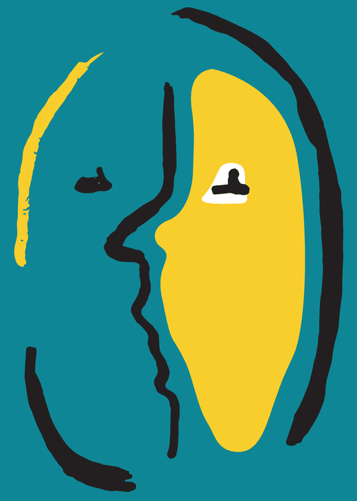

Lionsclub Apeldoorn Het Loo
organiseert benefietbijeenkomst Parkinson
in samenwerking met het Bettine Vriesekoop Fonds
Het fitte brein
Een show met een mix van muziek, wetenschap, humor, inspirerende verhalen en interactie met het publiek.
Maandag 1 februari 2027
Theater Orpheus, Apeldoorn
- Middagstart 15.30 uur · € 10
- Walking dinnerstart 17.30 uur · € 100
- Avondstart 18.30 uur · € 35
Programma
Middag € 10
Inloop middagprogramma
Middagprogramma voor zorgprofessionals, mantelzorgers en andere geïnteresseerden
De monoloog Hé Mister Parkinson: een indringend toneelstuk over leven met de snelst groeiende hersenziekte ter wereld. Geschreven en gespeeld door Eltjo Herder. Inclusief nabespreking met onder andere Erik van Wensen.
Walking dinner € 100
Walking dinner
Met een bijdrage van Hans Böhm en ontmoetingen met bekende gasten uit het hoofdprogramma, in de VIP-foyer met uitzicht op de activiteiten in de foyer. Plek voor maximaal 100 gasten. Het avondprogramma is niet inbegrepen, maar kunt u apart bijboeken.
Avond € 35
Beleving in de foyer
We ontvangen u met koffie of thee. Tafeltennisclinic met Bettine Vriesekoop, simultaanschaak tegen schaakmeester Hans Böhm, een boksdemonstratie door Arnold Vanderlyde en een Yips challenge met Erik van Wensen.
Hoofdprogramma in de Hanoszaal
In een inspirerende show gepresenteerd door Tom van ’t Hek komen langs: Erik Scherder, Jan Vayne, Bas Bloem, Erik van Wensen, Jan Mulder, Stephan Veen, Bettine Vriesekoop, Hans Böhm en Arnold Vanderlyde. Met muziek van toppianist Jan Vayne, inclusief een drankje in de pauze.
Sprekers en gasten
Een persoonlijke uitnodiging
Waarom deze benefietbijeenkomst?
Het leven van ons Lions-lid Edward Augusteijn met Parkinson en de monoloog Hé Mister Parkinson vormen de aanleiding voor deze dag. Lionsclub Apeldoorn Het Loo organiseert de bijeenkomst in samenwerking met het Bettine Vriesekoop Fonds. De opbrengst wordt besteed aan onderzoek naar Parkinson door Bas Bloem en aan het Bettine Vriesekoop Fonds, gericht op meer bewegen voor mensen met Parkinson.